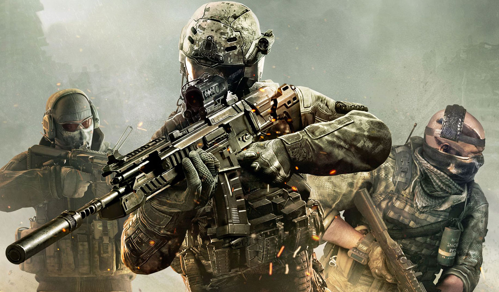

سبک بازی های محبوب جهان
امروزه بازی های ویدیویی زیادی در سبکهای مختلف طراحی شده و وارد بازار میشوند. شرکتها و استودیوهای بازی، همیشه تمام تلاش خود را دارند تا بهترین اثر را روانه بازار کنند. برخی از شرکتها تنها به تولید آثار انحصاری خود در یک سبک خاص میپردازند و عدهای دیگر سعی میکنند تا بازیها را در ژانرهای مختلف و مطابق با تمام سلایق تولید کنند. دستهبندی بازیها براساس گیم پلی آنها انجام میشود و به اصل داستان و موارد دیگر ارتباطی ندارد. اگر دوست دارید با انواع بازیهای دیجیتال و رایانهای آشنا شوید و ببینید کدامیک با سلیقهتان سازگارتر هست، این مقاله را تا انتها دنبال کنید و با دنیای وسیع بازیها بیشتر آشنا شوید.
آشنایی با ژانر های بازی های پر طرفدار
بازیهای ویدئویی در سبک و ژانرهای گوناگونی تولید میشوند. تنوع این سبکها به قدری بالاست که شاید تعدادشان بالغ بر 50 عدد شود. از بین این تعداد، شاید بتوان 9 مورد آن را جزو دستههای اصلی و مابقی را به عنوان زیرسبک حساب کرد. دستههای اصلی شامل ژانر ماجراجویی، اکشن، اکشن – ماجراجویی، تیراندازی (شوتر) ، نقش آفرینی، استراتژی، ورزشی و شبیهسازی هستند. در اینجا به ترتیبِ میزان محبوبیت ژانرها در جهان، توضیحاتی را ارائه دادهایم تا هم با ژانر بازیها آشنا شوید و هم به میزان محبوبیت آنها در دنیا پی ببرید. البته این آمار متغیر هستند و ممکن است با گذشت زمان و ارائه سبکهای جدید، میزان محبوبیت آنها تغییر پیدا کند. اما به طور کل امروزه بازیهای سریع و مهیج طرفداران بیشتری دارند و بازیکنان تمایل زیادتری نسبت به خرید بازیهای اکشن دارند.
بازیهای اکشن

بازی اکشن به بازیای گفته میشود که نیاز به فعالیت فیزیکی شخصیت اصلی دارد و شامل زدوخوردهای زیاد و جست و خیز میباشد. برای پیشروی در این بازیها، نیاز به دویدن، رفتن به اماکن مختلف، مبارزه با دشمن و حفظ نوار سلامت دارید.بیشتر بازیهای ژانر اکشن دارای نوار سلامتی برای بازیکن هستند. هرچه بتوان در مبارزات جان سالم به در برد و نوار سلامت خود را بیشتر حفظ کرد، به امتیاز بالاتر و پیشروی در بازی دست پیدا خواهید کرد. این بازی شامل زیرسبکهایی از بازیهای مبارزهای، بزن بزن و نبرد چند نفره میباشد. بازیهای Fortnite، Counter Strike Global offensive، Mortal Kombat، Halo، Call of Duty و Doom Eternal از جمله بازیهای محبوب ژانر اکشن هستند.
بازی های شوتر
بازی شوتر یا همان تیراندازی، یکی از بازیهای پرطرفدار میان بازیکنان است که نیاز به سرعت واکنش بالا و دقت در تیراندازی دارد. این بازیها به صورت تک نفره و گروهی قابل اجرا هستند؛ در بازی گروهی باید تمام بازیکنان عکسالعمل سریع داشته باشند تا بتوانند به پیروی دست پیدا کنند. این ژانر بازی شامل زیرسبکهای تیراندازی اول شخص، تیراندازی سوم شخص، تیراندازی تاکتیکی و شوتم آپ میباشد. از بازیهای معروف شوتر میتوان Call of Duty، Metro 2033، Far Cry، Halo و Tom Clancy’s Rainbow Six Seige را نام برد.